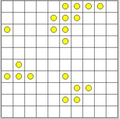
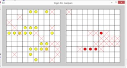
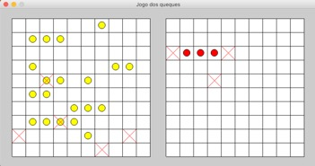

O jogo dos queques é uma simplificação do jogo da Batalha Naval. Agora, em vez de navios, temos tabuleiros compostos por um conjunto de 4 pratos de 1 queque, 3 pratos de 2 queques, 2 pratos de 3 queques e 1 prato de 4 queques. Estes apenas se dispõem na horizontal.
Observe o seguinte exemplo.

O tabuleiro tem uma dimensão 10 x 10.
Este jogo já apresenta alguma complexidade, pelo que será útil utilizar a decomposição para estruturar melhor o jogo em subproblemas:
1. Criar o tabuleiro: O tabuleiro é criado como uma matriz de 10x10 valores (não mutável). Os valores são gerados de forma aleatória, representando os pratos de queques.
· 0, quadrícula vazia;
· 1 a 4 - queque pertencente a um prato com 1, 2, 3 ou 4 queques.
2. Desenho da UI: Neste subproblema é desenhada a interface com o utilizador UI (User Interface). Esta é composta por dois tabuleiros:
· O tabuleiro do jogador (o do lado esquerdo na figura que se segue), onde são visualizados os seus queques e os "tiros" do oponente;
· O tabuleiro do oponente, neste caso será o computador, (o do lado direito na figura que se segue), onde são visualizados os queques à medida que vão sendo descobertos e os "tiros" falhados pelo jogador.

E claro, a lógica do módulo p5:
3. setup(): Este subproblema irá focar-se na criação dos dois tabuleiros e em decidir o jogador que inicia o jogo.
4. draw(): O ciclo de jogo. Verifica quem joga, executa a jogada através da lógica de jogo e valida se o jogo terminou e quem é o vencedor.
5. mouse_pressed(): O jogador irá interagir através do rato, premindo sobre a quadrícula correspondente.
Para manter o jogo configurável, definiram-se as seguintes constantes, logo após a importação dos módulos p5 e random:
from p5 import *
import random
# definicoes
LARGURA = 800 # largura da janela grafica
ALTURA = 400 # altura da janela grafica
LINHAS = 10 # numero de linhas de cada um dos tabuleiros
COLUNAS = 10 # numero de colunas de cada um dos tabuleiros
FORNADA = ((1,4), (2, 3), (3,2), (4, 1)) # 1 de 4, 2 de 3, ...
MAX_TENTATIVAS = 50 # numero máximo de tentativas para colocar, aleatoriamente, os queques em cada um dos tabuleiros
|
|
Observe a forma como é criada a literal FORNADA. Trata-se de um tuplo com 4 elementos. E cada um destes elementos é também um tuplo com dois valores. Na realidade podemos visualizar esta estrutura da seguinte forma:
Trata-se de uma matriz constante. Como aceder a um determinado elemento diretamente? FORNADA [2][1] Qual o valor retornado por esta expressão? |
Estas definições permitem flexibilizar a dimensão da janela e do tabuleiro de jogo, assim como o número e tipo de pratos de queques no tabuleiro.
Em p5, é geralmente necessário também criar algumas variáveis globais...
# variáveis globais
agora_joga = 0
O jogador que joga em cada jogada (0 - computador; 1 - humano).
E a seguir o tabuleiro, a lista de tiros e o número de queques ainda não comidos/encontrados, quer do jogador humano e quer do computador:
# tabuleiro, lista de tiros e queques não comidos - do jogador humano
tab_humano = None
lista_humano_tiros = []
quequesH_nao_comidos = 0
# tabuleiro, lista de tiros e queques não comidos - do computador
tab_computador = None
lista_computador_tiros = []
quequesC_nao_comidos = 0
As variáveis quequesC_nao_comidos e quequesH_nao_comidos determinam o número de queques que faltam para terminar o jogo.
|
|
Porque razão é que em p5 é necessário criar todas estas variáveis globais? |
O tabuleiro é constituído por uma matriz, que tipicamente é formada por um vetor de vetores. Em Pyhon é implementada através de tuplo com 10 linhas, cada linha sendo um tuplo de 10 valores. Sendo os tuplos imutáveis, definem um tabuleiro de valores constantes. Por esta razão, os tiros não poderão alterar diretamente o tabuleiro, sendo armazenados numa lista para posterior visualização.
A função cria_tabuleiro(lin, col, fornada) recebe três parâmetros:
· lin, o número de linhas do tabuleiro (inteiro);
· colunas, o número de colunas do tabuleiro (inteiro);
· fornada, uma matriz com a configuração dos pratos de queques a colocar no tabuleiro.
O algoritmo é composto por 2 passos:
1. Criar tabuleiro vazio;
2. Colocar no tabuleiro, de forma aleatória, os pratos com os queques.
Neste passo do algoritmo é criada uma lista de 10 tuplos, cada um com 10 zeros.
# construtor - cria tabuleiro com dimensão lin x col
def cria_tabuleiro(lin, col, fornada):
# cria um tabuleiro inicial como uma lista de linhas de 0s (vazio)
tab = []
for i in range(lin):
tab.append((0,)*col) # coloca linha de 0s
|
|
Ainda na secção anterior referimos que o nosso tabuleiro é um tuplo... Mas embora o objetivo é termos um tabuleiro final que é um tuplo, para a sua construção é conveniente utilizar antes uma lista, pelo facto de esta ser mutável. O que faz a seguinte instrução? (0,)*col Cria um tuplo com tantos 0 quantos a variável col. Ou seja, se col for 10, cria o tuplo: (0,0,0,0,0,0,0,0,0,0)
|
|
|
Algo para pensar... Um tuplo com apenas um elemento é representado com vírgula: (0,) Pois se utilizar a seguinte expressão obtém, não um tuplo, mas um inteiro (o número zero). (0) Na realidade, nem é necessário colocar os parêntesis. Basta definir a sequência de valores do tuplo separados apenas por vírgulas: tuplo = 0, 0, 0, 0, 0, 0, 0, 0, 0, 0
|
O algoritmo percorre o tuplo que define os tipos de pratos a colocar (a FORNADA) e, para cada prato desse tipo, tenta colocá-lo no tabuleiro numa posição aleatória.
Neste passo do algoritmo, que é aleatório, pode não ser possível colocar todas os pratos no tabuleiro. Depende um pouco da “arrumação” destes. Para isso definiu-se um máximo de 50 tentativas. Caso não seja possível colocar algum dos pratos, a função retorna False.
# para cada tipo de prato
for n, comp in fornada:
# para cada numero de pratos
for i in range(n): # lado esquerdo do par e' a quantidade
# coloca os queques no tabuleiro
for i in range(MAX_TENTATIVAS):
# determina coordenadas aleatorias
l = random.randint(0, lin-1)
c = random.randint(0, col-comp-1)
linha = tab[l]
# verifica se há espaço livre na linha
if linha[c:c+comp].count(0) == comp:
tab[l] = linha[:c] + (comp, )*comp + linha[c+comp:]
break
else:
# nao e' possivel criar o prato no tabuleiro
return False
return tuple(tab)
|
|
A função de conversão tuple faz a conversão do tabuleiro, de uma lista para um tuple. A partir desta conversão, o tabuleiro fica imutável.
Que vantagens poderia ter criar o tabuleiro apenas com listas? Algo para pensar ao longo da leitura do próximo capítulo. |
A interface com utilizador é gráfica, representando dois tabuleiros, lateralmente.

O tabuleiro da esquerda é o do jogador humano, onde este visualiza o posicionamento dos seus queques e os tiros dados pelo oponente.
O tabuleiro do lado direito apresenta os queques adivinhados pelo jogador humano e os tiros em falso.
A função desenhaUI() desenha na janela gráfica p5, seguindo o seguinte algoritmo:
def desenhaUI():
global tab_humano, lista_humano_tiros
1. Definição das dimensões da quadrícula e origens dos tabuleiros na janela: (ox1, oy) e (ox2, oy)
quadricula = min( (LARGURA-40) // COLUNAS // 2, (ALTURA -50) // LINHAS )
ox1 = (LARGURA - 2 * COLUNAS * quadricula) // 2 -20
ox2 = LARGURA // 2 + 20
oy = (ALTURA - LINHAS * quadricula) // 2
2. Desenhar quadriculas dos dois tabuleiros;
fill("white")
rect((ox1, oy), quadricula * COLUNAS, quadricula* LINHAS)
rect((ox2, oy), quadricula * COLUNAS, quadricula* LINHAS)
for i in range(1,LINHAS):
line((ox1+i*quadricula, oy), \
(ox1+i*quadricula, oy + LINHAS * quadricula))
line((ox2+i*quadricula, oy), \
(ox2+i*quadricula, oy + LINHAS * quadricula))
for i in range(1,COLUNAS):
line((ox1, oy + i * quadricula), \
(ox1 + COLUNAS * quadricula, oy + i * quadricula))
line((ox2, oy + i * quadricula), \
(ox2 + COLUNAS * quadricula, oy + i * quadricula))
3. Desenhar os queques do jogador como círculos amarelos no tabuleiro esquerdo;
# desenha os queques do jogador
ponto = (ox1 + quadricula//2, oy + quadricula//2)
for lin in tab_humano:
for queque in lin:
if queque > 0:
fill("yellow")
circle(ponto, quadricula//2)
ponto = move_ponto(ponto, quadricula, 0)
ponto = move_ponto(ponto, -COLUNAS*quadricula, quadricula)
4. Desenhar no tabuleiro direito os tiros do jogador como pontos vermelhos, caso acerte, ou cruzes vermelhas caso falhe;
# desenha os tiros do jogador
for lin, col, tiro in lista_humano_tiros:
if tiro > 0:
ponto = (ox2 + quadricula//2 + col*quadricula, \
oy + quadricula//2 + lin*quadricula)
fill("red")
circle(ponto, quadricula//2)
else:
ponto = (ox2 + col*quadricula, oy + lin*quadricula)
stroke("red")
line(ponto, move_ponto(ponto,quadricula, quadricula))
line(move_ponto(ponto, 0, quadricula), \
move_ponto(ponto,quadricula, 0))
stroke("black")
5. Desenhar os tiros do computador como cruzes vermelhas no tabuleiro esquerdo.
# desenha os tiros do computador
for lin, col, tiro in lista_computador_tiros:
ponto = (ox1 + lin*quadricula, oy + col*quadricula)
stroke("red")
line(ponto, move_ponto(ponto,quadricula, quadricula))
line(move_ponto(ponto, 0, quadricula), move_ponto(ponto,quadricula, 0))
stroke("black")
Foi utilizada um função auxiliar para calculo das deslocações de pontos:
# desloca um ponto
def move_ponto(ponto, x, y):
return (ponto[0]+x, ponto[1]+y)
A função setup() cria a janela gráfica com os dois tabuleiros e atualiza o número de queques presentes nesses tabuleiros, utilizando a função auxiliar soma_queques().
No final determina, aleatoriamente, a quem cabe iniciar o jogo, através da variável global agora_joga.
# inicialização do jogo
def setup():
global tab_computador, tab_humano, \
quequesC_nao_comidos, quequesH_nao_comidos, jogador
# dimensão da janela
size(LARGURA, ALTURA)
title("Jogo dos queques")
# cria os tabuleiros com os queques
tab_humano = cria_tabuleiro(LINHAS, COLUNAS, TABULEIRO)
tab_computador = cria_tabuleiro(LINHAS, COLUNAS, TABULEIRO)
if not tab_computador or not tab_humano:
print("Não foi possível criar o tabuleiro")
exit()
else:
quequesH_nao_comidos = quequesC_nao_comidos = soma_queques(FORNADA)
# determina quem joga primeiro (computador - 0 / humano - 1)
jogador = random.randint(0,1)
A função auxiliar soma_queques() retorna o valor do somatório dos produtos entre o número de pratos (n) e o número de queques (q) em cada um desses pratos. O valor deste somatório é, afinal, o número total de queques contidos em FORNADA
def soma_queques(fornada):
soma = 0
for n, q in fornada:
soma += n*q
return soma
O ciclo de jogo é implementado em p5 através da função draw() seguindo o seguinte algoritmo:
1. Desenha a UI do jogador;
2. Caso seja o computador a jogar, determina jogada aleatória (a jogada do jogador humano é realizada no evento do rato);
· Se o o computador falhar, muda para o jogador humano;
3. Verifica se algum jogador venceu
# ciclo de jogo
def draw():
global tab_computador, tab_humano, quequesC, quequesH, jogador, \
lista_humano_tiros, lista_computador_tiros
# desenha o interface do jogador
desenhaUI()
# jogada do computador
if jogador == 0:
# tiro aleatório
l = random.randint(0, LINHAS-1)
c = random.randint(0, COLUNAS-1)
tiro = tab_humano[l][c]
lista_computador_tiros.append((l, c, tiro))
#print('Jogada do computador: '+ str(l) + " : " + str(c))
# se falhou muda de jogador
if tiro == 0:
jogador = 1 # passa para o jogador humano
else:
quequesH -= 1
# verifica se alguem ganhou
if quequesC == 0:
print("Parabens! É o vencedor.")
exit()
elif quequesH == 0:
print("Perdeu... O computador venceu.")
exit()
Neste jogo, optou-se por utilizar o rato para selecionar diretamente a quadrícula de forma a tornar a interação mais intuitiva. Em p5 a função que recebe os eventos de premir o rato é mouse_pressed().
O algoritmo é simples:
1. Se for o jogador humano a jogar, determina o valor da quadrícula através das coordenadas do rato (mouse_x, mouse_y)
2. Realiza o tiro do jogador e verifica se acertou em algum queque...
3. Se não acertou, então troca para o outro jogador;
4. Se acertou, então decrementa o número de queques que faltam adivinhar.
# evento do rato - jogada do jogador humano
def mouse_pressed():
global tab_computador, lista_humano_tiros, jogador, quequesC
# jogada do humano
if jogador == 1:
tiro = get_rato(mouse_x, mouse_y)
if tiro:
l = tiro[0]
c = tiro[1]
alvo = tab_computador[l][c]
lista_humano_tiros.append((l,c, alvo))
# se falhou muda de jogador
if alvo == 0:
jogador = 0 # passa para o jogador computador
else:
quequesC -= 1
Utilizou-se uma função auxiliar para determinar a quadrícula a partir das coordenadas do rato.
def get_rato(x, y):
quadricula = min( (LARGURA-40) // COLUNAS // 2, (ALTURA -50) // LINHAS )
ox2 = LARGURA // 2 + 20
oy = (ALTURA - LINHAS * quadricula) // 2
c = (x-ox2) // quadricula
l = (y-oy) // quadricula
if l>=0 and l<LINHAS and c>=0 and c<COLUNAS:
return (l, c)
else:
return False
A função retorna um par de coordenadas (linha,coluna) caso o rato tenha sido premido dentro da quadrícula direita, ou False caso contrário.
Não se esqueça de no final adicionar a instrução que executa o p5.
if __name__ == '__main__':
run()
Nesta solução, fez-se a restrição de os tabuleiros estarem apenas na horizontal. Acrescente a possibilidade de o tabuleiro ter tabuleiros também na vertical. E a impossibilidade de os tabuleiros estarem juntos, obrigando a, pelo menos, uma casa a separar cada dois tabuleiros.
|
|
Partilhe o seu jogo!
|